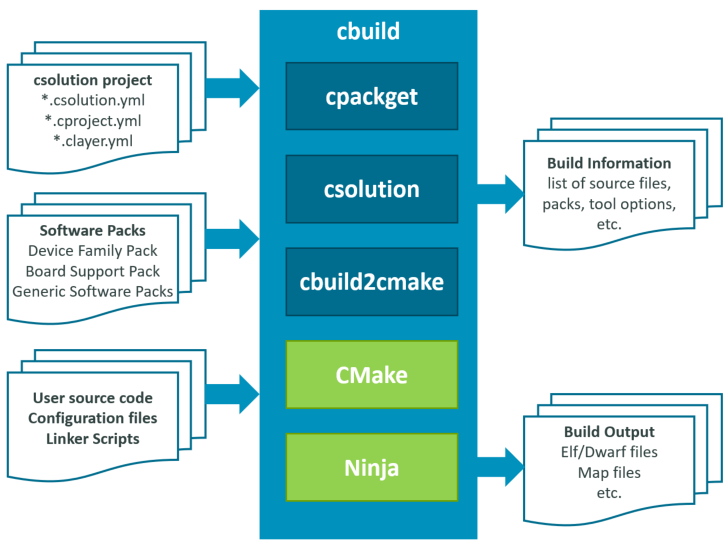

Overview
Target Audience
This user's guide assumes basic knowledge about Cortex-M software development. It is written for embedded software developers that work with C/C++ compiler toolchains and utilize microcontroller devices with Cortex-M processors and Ethos-U NPUs. The CMSIS-Toolbox supports currently:
- Arm Compiler for Embedded version 6.18 or higher
- Arm FuSa Compiler for Embedded version 6.16.2 or higher is also supported
- Arm GNU Toolchain (GCC) version 10.3.1 or higher
- IAR Compiler version 9.32.1 or higher
- CLANG Compiler version 17.0.1 or higher based on LLVM technology
Overall Workflow
The CMSIS-Toolbox uses software packs for device/board support and access reusable software components. The operation is controlled via intuitive csolution project files in YAML format. The overall application is defined in the *.csolution.yml file and contains one or more projects that can utilize pre-configured software layers. The build engine CMake/Ninja calls the C/C++ compiler toolchain that generates the Build Output.
The cbuild: Build Invocation command orchestrates the overall build steps. This command calls individual command line tools to generate the application as outlined in the following diagram.

The build steps are:
- cpackget downloads Software Packs that are required for
*.csolution.ymlwhen using the option--pack. - csolution processes the User Input and the Software Packs to generate the overall Build Information. Refer to Overview of Operation for details.
- cbuild2cmake converts this Build Information into CMake format.
- CMake/Ninja call the C/C++ compiler toolchain to translate the source files into the application image.
Note
The CMSIS-Toolbox build system does not use the CMake compiler and linker flags specified by environment variables CFLAGS, LDFLAGS.
Refer to the chapter Build Operation for further details of the build process.
Command Line and IDE Usage
The CMSIS-Toolbox is a set of command line tools that are designed for stand-alone usage and integration into IDEs or DevOps systems for Continuous Integration (CI) workflows.

The VS Code IDE integration available from Arm is a viewer to the csolution project files and provides graphical ways to modify the content. Refer to DevOps Usage for more information on integration into CI workflows.
Benefits
The overall benefits of the CMSIS-Toolbox are:
- Flexible command line tools that can be used stand-alone or integrated into VS Code or DevOps systems for Continuous Integration (CI).
- Stand-alone tools are available for all host platforms (Windows, Mac, Linux) for flexible deployment.
- Software packs simplify tool setup with
device:orboard:selection and project creation with access to reusable software components. - Organize solutions with projects that are independently managed simplifies a wide range of use cases including multi-processor applications or unit testing.
- Integrates with domain specific generators (i.e. CubeMX) that support configuration of devices/boards and complex software stacks such as motor control.
- Provisions for product lifecycle management (PLM) with versioned software packs that ease update and management for configuration files.
- Software layers enable code reuse across similar applications with a pre-configured set of source files and software components.
- Target types allow application deployment to different hardware (test board, production hardware, virtual simulation models, etc.).
- Build types support software testing and verification (debug build, test build, release build, ect.).
- Support for multiple toolchains, even within the same set of project files and command line options to select different toolchains during verification.
- Linker Script Management utilizes device and board information of software packs to define available memory and allows flexible control of linker operation.
- Uses a CMake backend for the build process that integrates with other tools such as VS Code intellisense.
- Provides a list of software licenses used by the various software packs and software components.